周知，名柯中有不少关于数字的梗和谜语，本帖尝试分析这些出现过的数字，意图找出隐藏在数字之下的真相。
首先是关键道具的“APTX4869”和著名的“1/2的顶点”两者之间的“联系”。
“4869”在日语中谐音是“夏洛克”，而在“1/2的顶点”中写侦探小说作者向读者发起了挑战，值得注意的是，这份挑战是在181话之后正式发出的。
那么，4869+181=5050。
5050，五五开，一半一半，50%和50%，也就是两个1/2。这里既有猫哥的口头禅的call back，也有关于作者创立角色之初的设定，即1/2的设定。
柯南=1/2福尔摩斯，推理能力；
小哀=1/2福尔摩斯，化学能力；
即，1/2+1/2=1。
第1话，少年意气风发解决案件；第181话，少女嚎啕大哭表露真情；
在作者发起正式挑战之前，他早已将答案隐藏在字里行间。
首先是关键道具的“APTX4869”和著名的“1/2的顶点”两者之间的“联系”。
“4869”在日语中谐音是“夏洛克”，而在“1/2的顶点”中写侦探小说作者向读者发起了挑战，值得注意的是，这份挑战是在181话之后正式发出的。
那么，4869+181=5050。
5050，五五开，一半一半，50%和50%，也就是两个1/2。这里既有猫哥的口头禅的call back，也有关于作者创立角色之初的设定，即1/2的设定。
柯南=1/2福尔摩斯，推理能力；
小哀=1/2福尔摩斯，化学能力；
即，1/2+1/2=1。
第1话，少年意气风发解决案件；第181话，少女嚎啕大哭表露真情；
在作者发起正式挑战之前，他早已将答案隐藏在字里行间。
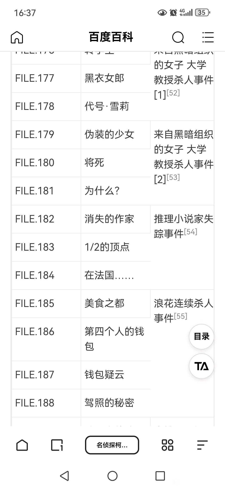
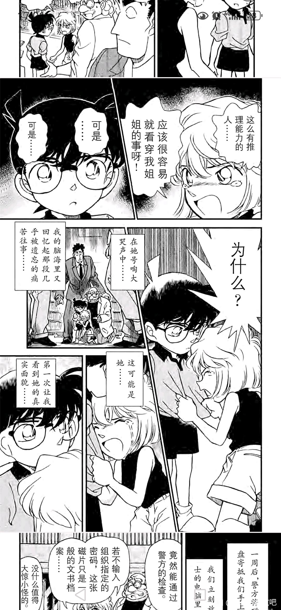
其次，深挖“1/2的顶点”。
“1/2的顶点”是一个符号，继承这个符号的是继承父亲意志的新名香保里。
在619话，作者借本堂瑛佑和柯南之口，再次提及了新名香保里的书（上下册），亦即提及了“1/2的顶点”这个符号。
为什么要在619话提及这个符号，因为作者在告诉读者，618话是名柯漫画的分水岭，上半部正式结束，下半部分正式开始！
而对话框中提到新名香保里的书刚好也是上下册，更巧合的是在这一案件前后，赤井秀一假死，冲矢昴登场了，标志着故事走向从单一阵营对抗（红黑）变为了多阵营对抗（红黑灰白黄）。
为什么偏偏是618话作为漫画上下部的分割线？因为黄金比例0.618这个数字。
请看618/1000=0.618，那1000话有什么？
1000话是红修篇系列的第一话！红修篇也是新兰的顶点！
第1-618话是漫画的上半部（即1/2），1000话是新兰关系的顶点，作者的简单巧思就将三个关键元素结合到一起了。只能说，精彩！
“1/2的顶点”是一个符号，继承这个符号的是继承父亲意志的新名香保里。
在619话，作者借本堂瑛佑和柯南之口，再次提及了新名香保里的书（上下册），亦即提及了“1/2的顶点”这个符号。
为什么要在619话提及这个符号，因为作者在告诉读者，618话是名柯漫画的分水岭，上半部正式结束，下半部分正式开始！
而对话框中提到新名香保里的书刚好也是上下册，更巧合的是在这一案件前后，赤井秀一假死，冲矢昴登场了，标志着故事走向从单一阵营对抗（红黑）变为了多阵营对抗（红黑灰白黄）。
为什么偏偏是618话作为漫画上下部的分割线？因为黄金比例0.618这个数字。
请看618/1000=0.618，那1000话有什么？
1000话是红修篇系列的第一话！红修篇也是新兰的顶点！
第1-618话是漫画的上半部（即1/2），1000话是新兰关系的顶点，作者的简单巧思就将三个关键元素结合到一起了。只能说，精彩！
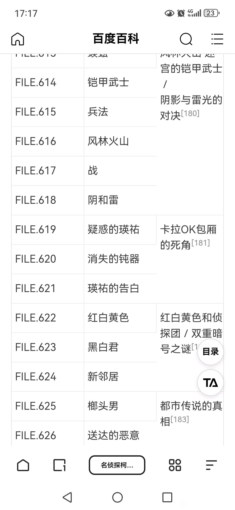
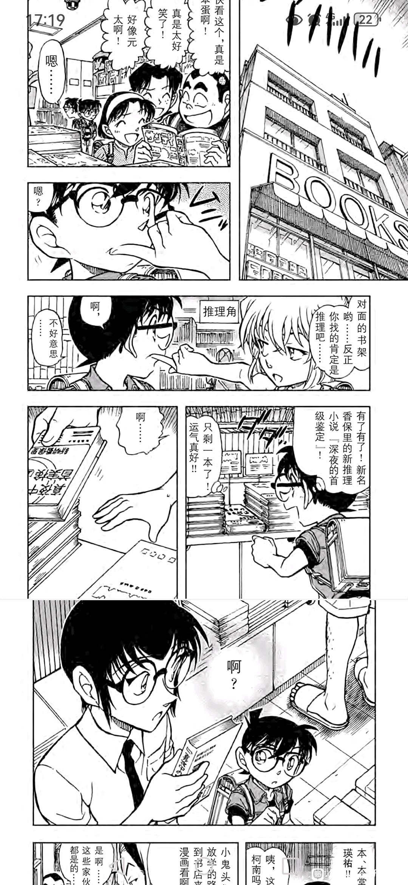
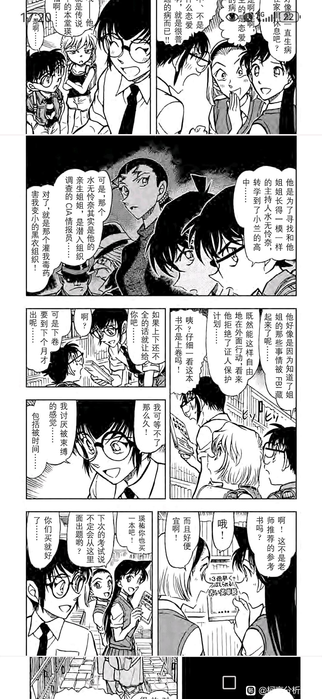
插个眼，很有意思的推论！不过73的创作节奏是发生过变化的，虽然创作的慢了，但是按现在的庞大世界观来说，名柯在1236话结束会不会有些仓促。
关于分卷规律的分析文还有这一篇，也是很有意思的分析文
【整理在海猿岛后】柯南漫画卷数的12卷、2...
关于分卷规律的分析文还有这一篇，也是很有意思的分析文
【整理在海猿岛后】柯南漫画卷数的12卷、2...
2024-05-21 18:28 | EdwardClow:boss篇如果只画主线，少画日常，那1236话完结是可行的。如果boss篇还是日常案件占大多数，主线挤牙膏，那仅仅1236话是不可能完结的。
楼主说的很好，跟B站上的小栗曾经讲过的1/2的福尔摩斯很像
【福尔摩斯探案集x灰原哀的三重设定：特殊的华生+小艾琳+1/2的福尔摩斯】https://www.bilibili.com/video/BV1Ej411k7ta?vd_source=8fca0b1a0325a780125c205481d687a8
【福尔摩斯探案集x灰原哀的三重设定：特殊的华生+小艾琳+1/2的福尔摩斯】https://www.bilibili.com/video/BV1Ej411k7ta?vd_source=8fca0b1a0325a780125c205481d687a8
场外线索
乱马 1/2 这部作品，主角的声优是新志两人的声优
乱马 1/2 这部作品，主角的声优是新志两人的声优
新名香保里居然在619话又出现了，楼主看漫画看的很仔细啊
关于621话本堂瑛佑退场和4869的“联系”。
第619话瑛佑与灰原哀第一次正式见面，第621话瑛佑向柯南道别，正式“退场”。
重看这3话，有几个奇怪的点，这里不作展开，仅分析数字，请记住“3”这个数字就行（关联组有柯哀兰，新兰瑛，柯哀瑛，新兰园，三小只）。
周知，数字解谜一般用到“反转/倒转”和“置换顺序”的方法，作者在作品里也经常用到。
以此为线索，结合之前提到1/2和3这两个线索，有两处有趣的发现：
①4869/3=1623，将1623按数字大小排列得1236，1236/2=618。
②4869倒转为9684，9684/2=4842，将4842倒转为2484，2484/2=1242，1242/2=621；或将4842/2=2421，2421倒转为1242，1242/2=621。
在①中，可以说联系比较弱，推导过程牵强，但成功将618和4869联系起来了，说明618不仅是因为黄金分割比例0.618的含义，因为“3选1”的元素过于明显（另，618话即风林火山系列最终话，长野三人组，平和新兰，嗯……你懂得）。
在②中，621和4869仅用“1/2”和“倒转”即可推导出，瑛佑在621话退场是有意为之的。
如果作者无意，618话标题阴和雷，619话标题“疑惑的瑛佑”并提及“1/2的顶点”，621话标题“瑛佑的告白”，也未免过去凑巧了吧。
另外，“阴和雷”以及“疑惑的告白”，很难不去联想“伦敦篇”的名场面，要知道瑛佑原本是有配平小兰的意味……
随着瑛佑的退场，标志着名柯漫画进正式入下半部，而这些在数字便有早早的提示。
第619话瑛佑与灰原哀第一次正式见面，第621话瑛佑向柯南道别，正式“退场”。
重看这3话，有几个奇怪的点，这里不作展开，仅分析数字，请记住“3”这个数字就行（关联组有柯哀兰，新兰瑛，柯哀瑛，新兰园，三小只）。
周知，数字解谜一般用到“反转/倒转”和“置换顺序”的方法，作者在作品里也经常用到。
以此为线索，结合之前提到1/2和3这两个线索，有两处有趣的发现：
①4869/3=1623，将1623按数字大小排列得1236，1236/2=618。
②4869倒转为9684，9684/2=4842，将4842倒转为2484，2484/2=1242，1242/2=621；或将4842/2=2421，2421倒转为1242，1242/2=621。
在①中，可以说联系比较弱，推导过程牵强，但成功将618和4869联系起来了，说明618不仅是因为黄金分割比例0.618的含义，因为“3选1”的元素过于明显（另，618话即风林火山系列最终话，长野三人组，平和新兰，嗯……你懂得）。
在②中，621和4869仅用“1/2”和“倒转”即可推导出，瑛佑在621话退场是有意为之的。
如果作者无意，618话标题阴和雷，619话标题“疑惑的瑛佑”并提及“1/2的顶点”，621话标题“瑛佑的告白”，也未免过去凑巧了吧。
另外，“阴和雷”以及“疑惑的告白”，很难不去联想“伦敦篇”的名场面，要知道瑛佑原本是有配平小兰的意味……
随着瑛佑的退场，标志着名柯漫画进正式入下半部，而这些在数字便有早早的提示。
上半部（1-618话）的黄金分割点是381-382话。
618*0.618=381.924。
这个系列就是经典的接触篇，另据前辈/大佬考究，背景是情人节前夕到情人节当日。
亦即有，少年以身犯险，少女决意营救。
如此重要的篇章安排在上半部的黄金分割点，在漫画结构堪称完美！
618*0.618=381.924。
这个系列就是经典的接触篇，另据前辈/大佬考究，背景是情人节前夕到情人节当日。
亦即有，少年以身犯险，少女决意营救。
如此重要的篇章安排在上半部的黄金分割点，在漫画结构堪称完美！
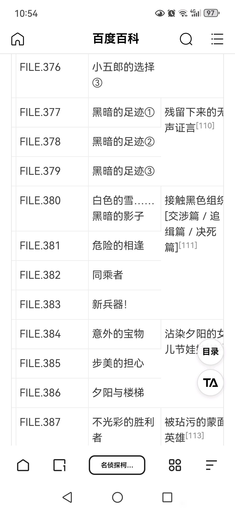
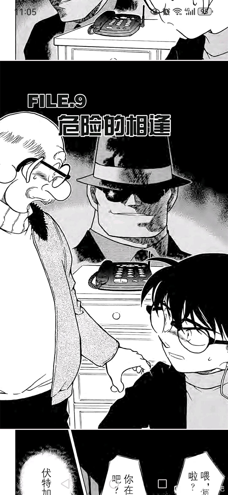
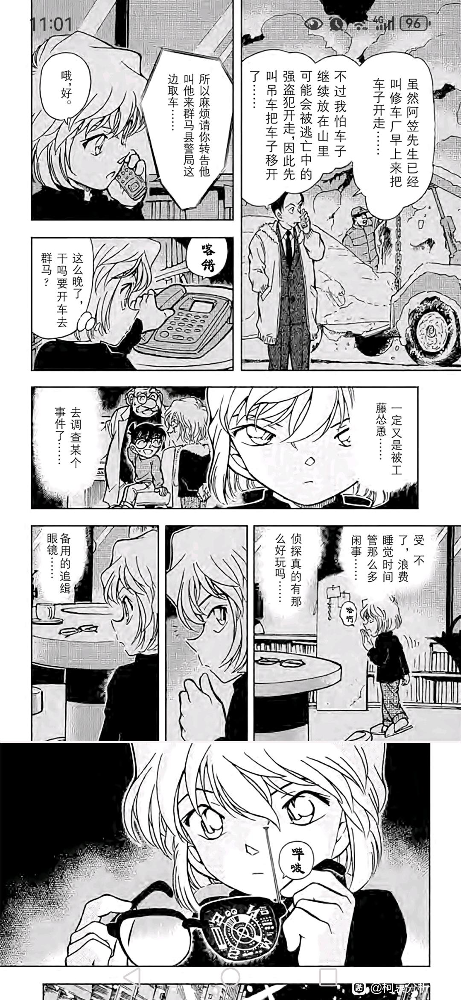
太棒了 支持你
下半部（619-？）的黄金分割点是1000话开始的红修篇。
已知618*0.618=381.924≈382，
即有，382+618=1000！
作者选择1000话作为新兰关系的顶点不只是因为“1000”这个数字很吸睛，还考虑了整篇漫画的结构。
以618话为分界线，上半部的“0.618”在接触篇，两人爱而不知。下半部的“0.618”在红修篇，两人错误恋爱。
上下部在0黄金分割点后的故事结构是对称的。
接触篇后不久是满月篇，映像馆篇，之后是红黑系列伏笔和高潮。
红修篇后不久是海猿岛篇，时间胶囊篇，之后是对决boss的伏笔和高潮（目前老头三选一，赤井线开始填坑）。
已知618*0.618=381.924≈382，
即有，382+618=1000！
作者选择1000话作为新兰关系的顶点不只是因为“1000”这个数字很吸睛，还考虑了整篇漫画的结构。
以618话为分界线，上半部的“0.618”在接触篇，两人爱而不知。下半部的“0.618”在红修篇，两人错误恋爱。
上下部在0黄金分割点后的故事结构是对称的。
接触篇后不久是满月篇，映像馆篇，之后是红黑系列伏笔和高潮。
红修篇后不久是海猿岛篇，时间胶囊篇，之后是对决boss的伏笔和高潮（目前老头三选一，赤井线开始填坑）。
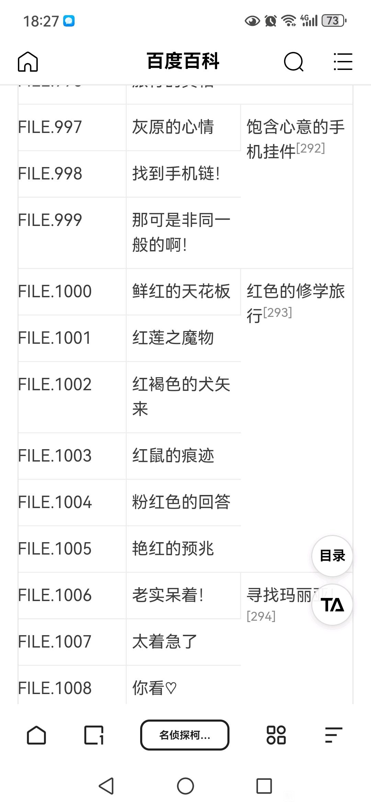
1250话是柯南大结局的证据之一：
按上文结论，引入关键数字0.618，经过简单计算，有：1250*0.618=772.5。
请看772话到773话之间发生的标志性事件：拉窗帘。
在此不论拉窗帘行为的争议性（用拉窗帘三字仅是快速唤醒各位的记忆，此话很重要），在我看来，本事件的最大作用是向读者解释“何为真正的侦探？”
新一/柯南历经无数案件后，领悟到“真正的侦探”，才能在此事件中的完美收场：他既解开了真相，又保护了无辜的人，并且让两个凶手认识错误，接受法律的制裁。
因此，这个篇章是名侦探柯南中的最为重要的分水岭，标志着柯南从此成为了“柯导”，并且在身份认知上进行了自我确认（请注意，此篇章发生在死罗神篇和伦敦篇之后）。
作者用这个篇章意在告诉读者们，新一/柯南是一名“真正的侦探”，关于“侦探”的部分在772-773话解释完了，那么接下来，作品的后半部分，来重点讨论关于“柯南”的部分，于是我们看到柯南开始浪了，直到红修篇被优作封号……但新一/柯南只是暂时统一，必然要在大结局完成真正的统一。
1-772.5话，新一/柯南身份逐渐分裂，但他成长为“真正的侦探”。
772.5-1250话，因为侦探属性的约束，新一/柯南完成了身份统一。
“侦探”+“柯南”＝名侦探柯南。
至此，证毕。
按上文结论，引入关键数字0.618，经过简单计算，有：1250*0.618=772.5。
请看772话到773话之间发生的标志性事件：拉窗帘。
在此不论拉窗帘行为的争议性（用拉窗帘三字仅是快速唤醒各位的记忆，此话很重要），在我看来，本事件的最大作用是向读者解释“何为真正的侦探？”
新一/柯南历经无数案件后，领悟到“真正的侦探”，才能在此事件中的完美收场：他既解开了真相，又保护了无辜的人，并且让两个凶手认识错误，接受法律的制裁。
因此，这个篇章是名侦探柯南中的最为重要的分水岭，标志着柯南从此成为了“柯导”，并且在身份认知上进行了自我确认（请注意，此篇章发生在死罗神篇和伦敦篇之后）。
作者用这个篇章意在告诉读者们，新一/柯南是一名“真正的侦探”，关于“侦探”的部分在772-773话解释完了，那么接下来，作品的后半部分，来重点讨论关于“柯南”的部分，于是我们看到柯南开始浪了，直到红修篇被优作封号……但新一/柯南只是暂时统一，必然要在大结局完成真正的统一。
1-772.5话，新一/柯南身份逐渐分裂，但他成长为“真正的侦探”。
772.5-1250话，因为侦探属性的约束，新一/柯南完成了身份统一。
“侦探”+“柯南”＝名侦探柯南。
至此，证毕。
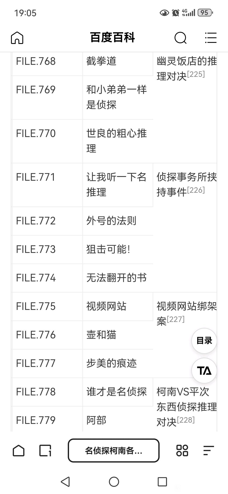
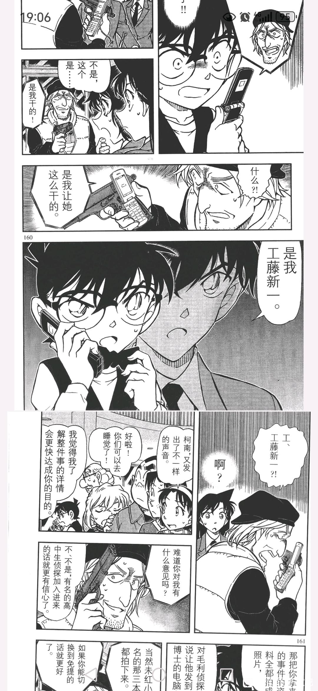
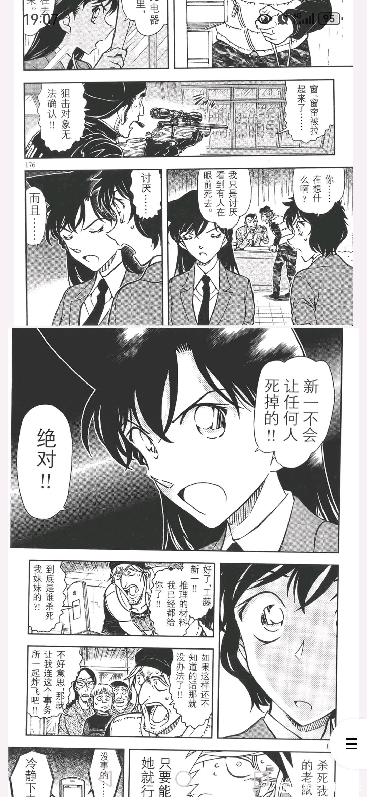